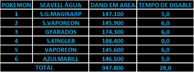

Time de Água
Aqui esta o time de Água focado em PvE para jogar na Nightmare World, Shiny Vaporen é o off tank e podemos trocar o Azumarill ou o Shiny Magikarp podendo colocar em seus lugares o Shiny Golduck.
Aqui esta o time de Água focado em PvE para jogar na Nightmare World, Shiny Vaporen é o off tank e podemos trocar o Azumarill ou o Shiny Magikarp podendo colocar em seus lugares o Shiny Golduck.
Aqui esta o time de Gelo focado em PvE para jogar na Nightmare World, Beatric é o off tank e podemos trocar o Glalie normal pelo Mega Glalie ou shiny Delibird .